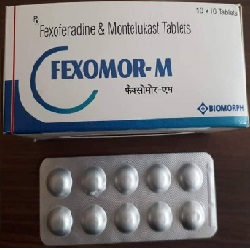

Fexofenadine

Fexofenadine သည္ ဓာတ္မတည့္ျခင္းကို ျဖစ္ေစေသာ Histamine ကို ဆန္႔က်င္ေပးေသာ ေဆးျဖစ္သည္။
ဓာတ္မတည့္ေသာအခါ ထြက္လာေသာ Histamine မ်ားကို ထက္မထြက္လာေအာင္လည္း ျပဳလုပ္ေပးသည္။
အသုံးဝင္ပုံ
- ဓာတ္မတည့္ျခင္း လကၡဏာမ်ား ျဖစ္ေသာ မ်က္ရည္မ်ားက်ျခင္း ႏွာေစးျခင္း ႏွာေခ်ျခင္း အင္ျပင္ကြက္ အနီကြက္မ်ား ထြက္ျခင္း မ်က္လုံးႏွင့္ ႏွာေခါင္း ယားယံျခင္း စသည္တို႕ကို သက္သာေပ်ာက္ကင္းေစ သည္။
သုံးစြဲပုံ
- ေသာက္ေဆး အလုံးႏွင့္ အရည္ ပုံစံ ရိွသည္။ တစ္ေန႔ကို ႏွစ္ႀကိမ္ ေသာက္ရသည္။
- ေဆးေသာက္ရာ ပမာဏသည္ အသက္အရြယ္ ကိုယ္အေလးခ်ိန္ႏွင့္ ေရာဂါေပၚ မူတည္၍ ကြာျခားမႈရိွသည္။
- ေဆးအရည္ကို ေသာက္ပါက ေဆးပုလင္းကို ေသခ်ာစြာလွုပ္ပါ။ ေသာက္ေဆး အလုံးေသာက္ပါက ရိုးရိုး ေရျဖင့္သာ ေသာက္ပါ။
Aluminium ႏွင့္ Magnesium ပါေသာ အစာအိမ္ေဆးမ်ားကို Fexofenadine ေသာက္ၿပီး ၂ နာရီအတြင္း မေသာက္ရပါ။
ေဘးထြက္ဆိုးက်ိဳးမ်ား
- ေခ်ာင္းဆိုးျခင္း
- ဖ်ားျခင္း
- ဗိုက္ေအာင့္ျခင္း တို႕ ျဖစ္တတ္သည္။
- ထိုလကၡဏာမ်ား ပိုမို ဆိုးရြားလာပါက ဆရာဝန္ႏွင့္ ျပသပါ။ လြန္စြာ မူးေဝျခင္း ေဖာေရာင္လာျခင္း (မ်က္ႏွာ) အသက္ရွုရခက္ျခင္း စေသာ ေဘးထြက္ဆိုးက်ဳိးမ်ားမွာ လြန္စြာ ေတြ႕ရခဲသည္။
သတိျပဳရမည့္ အခ်က္မ်ား
- ေဆးရည္တြင္ သၾကားဓါတ္ပါဝင္တတ္ေသာေၾကာင့္ ဆီးခ်ိဳသမားမ်ားတြင္ သတိျပဳၿပီး သုံးစြဲရမည္။
- ကိုယ္ဝန္ေဆာင္မ်ားတြင္ လိုအပ္မွ ဆရာဝန္ ညႊန္ၾကားခ်က္ႏွင့္ ေသာက္သင့္သည္။
- ႏို႔တိုက္မိခင္မ်ားသည္လည္း ဆရာဝန္ႏွင့္တိုင္ပင္ၿပီးမွ သုံးစြဲသင့္သည္။
ေဆးအာနိသင္
- Fexofenadine ေသာက္ထားေသာအခါ အေရျပား ဓါတ္တည့္ မတည့္စမ္းသပ္ေသာ စစ္ေဆးမႈမ်ားကို မွားေစႏိုင္သည္။
ေဆးအလြန္အကၽြံသုံးျခင္း
- ေဘးထြက္ဆိုးက်ဳိး လကၡဏာမ်ား ဆိုးရြားပါက သို႕မဟုတ္ အသက္ရွဴရခက္ပါက အဆိပ္ကုဌာနသို႕ အျမန္ဆုံးသြားရန္ လိုသည္။
- ေဆးေတြကို ဘယ္ေဆးမဆို ဆရာ၀န္ ဒါမွမဟုတ္ တတ္ကၽြမ္းနားလည္တဲ့ က်န္းမာေရး၀န္ထမ္းေတြရဲ႕ ညႊန္ၾကားခ်က္အတိုင္း တိတိက်က် ေသာက္သင့္ပါတယ္။
- မိမိသေဘာနဲ႔ေဆးရပ္လိုက္တာမ်ဳိး မလုပ္သင့္ပါဘူး။
- ေဘးထြက္ဆိုးက်ဳိး ျပင္းျပင္းထန္ထန္ ခံစားရရင္ေတာ့ ဆရာ၀န္နဲ႔တိုင္ပင္ဖို႔ လိုအပ္ပါတယ္။
Source- ေဒါက္တာခ်စ္စႏီၵေက်ာ္